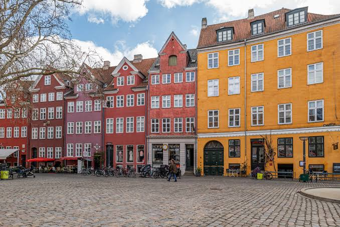
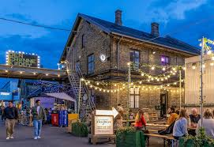
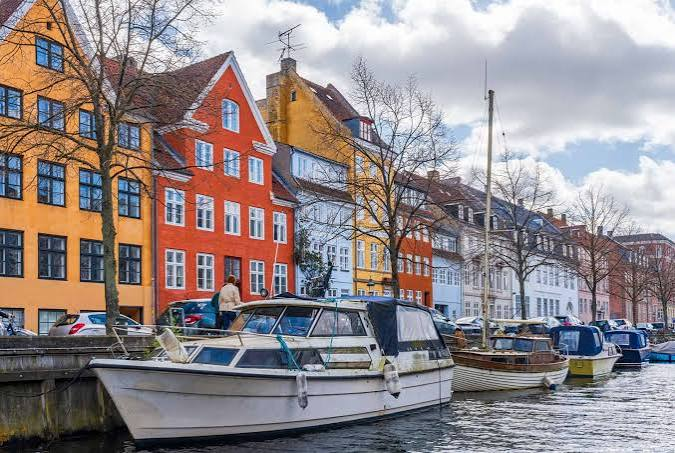

CityLoop Quest Copenhague


Indre By concentre les institutions, les rues commerçantes et les traces de la ville fortifiée. Strøget attire les foules, mais quelques détours suffisent pour retrouver cours, librairies et places plus calmes. Slotsholmen forme le noyau politique ; Frederiksstaden, autour d’Amalienborg, offre une composition aristocratique ; Nyhavn ajoute son décor portuaire devenu très touristique.
Vesterbro fut longtemps un quartier ouvrier, associé aux abattoirs, aux hôtels bon marché et à la prostitution près de la gare. Sa transformation a produit cafés, galeries et restaurants dans le Meatpacking District. L’ancienne rugosité n’a pas totalement disparu, et le quartier reste un bon exemple des tensions entre rénovation, hausse des loyers et mémoire du travail.

Nørrebro est plus dense, jeune et multiculturel. Assistens Kirkegård, Jægersborggade, Blågårds Plads et Superkilen offrent des ambiances très différentes. Épiceries moyen-orientales, boulangeries nouvelles, ateliers et bars partagent les mêmes rues. Les manifestations et débats sur l’intégration ont aussi marqué son histoire récente.
Christianshavn se reconnaît à ses canaux réguliers, hérités du plan de Christian IV, et à ses maisons de marchands. Christiania occupe depuis 1971 d’anciennes casernes au-delà des remparts. Amager, longtemps territoire de maraîchers puis d’industries, combine aujourd’hui plage, quartiers contemporains d’Ørestad et secteurs populaires autour d’Amagerbrogade.

Østerbro possède une réputation plus résidentielle, avec larges avenues, parcs, stade et proximité de la mer. Frederiksberg, commune indépendante enclavée dans Copenhague, offre jardins, villas et rues commerçantes. La meilleure façon de sentir ces différences consiste à parcourir une rue ordinaire, entrer dans une boulangerie et observer le rythme des vélos : les quartiers se définissent moins par une frontière nette que par la manière dont on y habite.